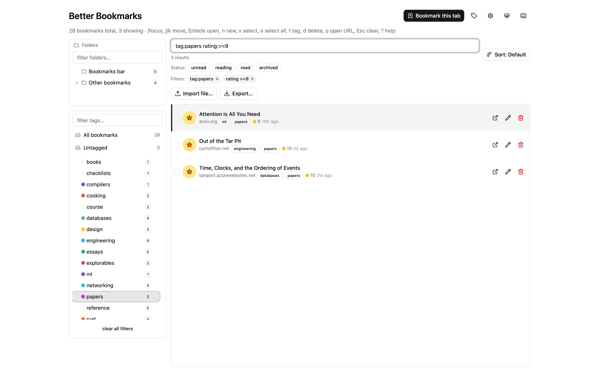

Better Bookmarks
Tags, not folders.
A Chrome extension that merges the same page saved under different URLs.
A Chrome extension that merges the same page saved under different URLs.

Your bookmarks stay in Chrome. The tags, ratings and notes stay in your browser.
